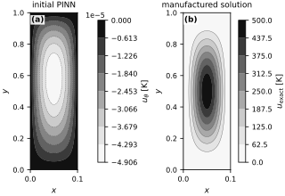
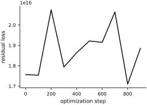
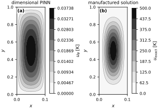
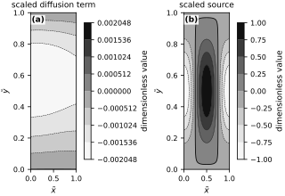
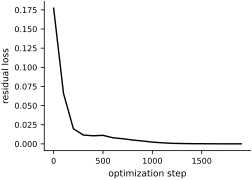
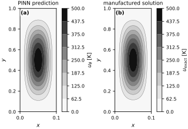
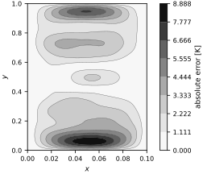

Forward Problems with PINNs#
We can use PINNs to solve forward problems in place of traditional numerical methods. This is not recommended, as PINNs are not yet as efficient as traditional numerical methods. But, it is a good way to learn how to use PINNs and to understand their limitations. Throughout this section, we follow closely the methodology of Wang et al. (2023).
The toy problem - Steady-state heat equation#
We are going to solve a Poisson’s equation with a source term:
Making an exact solution#
We will use a common trick to construct an exact solution. We will use the following function:
The boundary conditions are satisfied by construction. The source term is:
This common construction will be used again below.
Let’s use the following parameters:
u0 = 500 # degrees Kelvin
k = 1_000.0 # thermal conductivity in W/mK
Lx = 0.1 # meters
Ly = 1.0 # meters
Enforcing the boundary conditions#
We solve this boundary-value problem using PINNs. Let \(\operatorname{MLP}(x,y)\) denote a multilayer perceptron. Our model is
where the polynomial factor vanishes on the boundary and therefore enforces the boundary conditions exactly.
Multilayer perceptron#
We use a multilayer perceptron to represent the solution of the PDE. Its architecture is
where
The terms \(W^{(l)}\) and \(b^{(l)}\) are the weights and biases of the \(l\)-th layer, and \(g^{(l)}\) is the activation function of the \(l\)-th layer. The parameters \(\theta\) are the weights and biases of the network:
For PINN applications, it is recommended that:
We use the tanh activation function all layers.
We use 128 to 512 neurons per layer.
We use 3 to 5 layers.
Use the Glorot initialization (this is the default in
equinox).
Let’s make the model:
import equinox as eqx
import jax.numpy as jnp
import jax.random as jrandom
key = jrandom.PRNGKey(0)
key, subkey = jrandom.split(key)
# MLP parameters
width_size = 128
depth = 4
mlp = eqx.nn.MLP(2, 1, width_size, depth, jnp.tanh, key=subkey)
# This is the parameterization of the solution that satisfies the boundary conditions
u_hat = lambda x, y, mlp: x * (Lx - x) * y * (Ly - y) * mlp(jnp.array([x, y]))[0]
Let’s see how it looks like before we train it:
{kind=link}

Fig. 36 Fields before training the dimensional PINN. (a) The initial PINN field varies only on a minute temperature scale. (b) The manufactured solution spans 0 to 500 K. Separate labeled gray scales expose the scale mismatch.#
Setting up the loss function#
We are going to train this by minimizing the following loss function:
The first step is to turn the loss function into an expectation. Construct the random variable \(\mathbf{X} = (X,Y)\) uniformly distributed in \(\Omega\). Then, the loss function can be written as:
Notice that the volume of \(\Omega\), \(|\Omega|\), appears as a constant factor. Where did it come from? Recall the probability density function of \(\mathbf{X}\) is:
So:
We can approximate this expectation by sampling a finite number of points from \(\Omega\) and averaging the loss function over these points. This is what we will be doing in each iteration of the training process.
from jax import grad
# First order derivatives
u_x = grad(u_hat, argnums=0)
u_y = grad(u_hat, argnums=1)
# Second order derivatives
u_xx = grad(u_x, argnums=0)
u_yy = grad(u_y, argnums=1)
# The Laplacian
D2_u = lambda x, y, mlp: u_xx(x, y, mlp) + u_yy(x, y, mlp)
# The source term
source_term = lambda x, y: 2.0 * jnp.pi ** 2 * k * u0 * (
-Lx ** 2 * jnp.sin(jnp.pi * x / Lx) ** 2 * jnp.cos(2.0 * jnp.pi * y / Ly)
-Ly ** 2 * jnp.sin(jnp.pi * y / Ly) ** 2 * jnp.cos(2.0 * jnp.pi * x / Lx)
) / (Lx ** 2 * Ly ** 2)
# The PDE residual (vectorize)
pde_residual = vmap(
lambda x, y, mlp: k * D2_u(x, y, mlp) + source_term(x, y),
in_axes=(0, 0, None))
# Finally the loss function:
loss = lambda mlp, x, y: Lx * Ly * jnp.mean(jnp.square(pde_residual(x, y, mlp)))
Training the model#
We use the Adam optimizer with standard parameters. The training algorithm is:
def train(
loss,
mlp,
key,
optimizer,
Lx=1.0,
Ly=1.0,
num_collocation_residual=512,
num_iter=10_000,
freq=1,
):
@eqx.filter_jit
def step(opt_state, mlp, xs, ys):
value, grads = eqx.filter_value_and_grad(loss)(mlp, xs, ys)
updates, opt_state = optimizer.update(grads, opt_state)
mlp = eqx.apply_updates(mlp, updates)
return mlp, opt_state, value
opt_state = optimizer.init(eqx.filter(mlp, eqx.is_inexact_array))
losses = []
for i in range(num_iter):
key, subkey = jrandom.split(key)
xb = jrandom.uniform(subkey, (num_collocation_residual,), maxval=Lx)
key, subkey = jrandom.split(key)
yb = jrandom.uniform(subkey, (num_collocation_residual,), maxval=Ly)
mlp, opt_state, value = step(opt_state, mlp, xb, yb)
if i % freq == 0:
losses.append(value)
print(f"Step {i}, residual loss {value:.3e}")
return mlp, losses
And this is the actual training:
import optax
optimizer = optax.adam(1e-3)
trained_mlp, losses = train(loss, mlp, key, optimizer, num_collocation_residual=256, num_iter=1_000, freq=100, Lx=Lx, Ly=Ly)
Step 0, residual loss 1.756e+16
Step 100, residual loss 1.754e+16
Step 200, residual loss 2.075e+16
Step 300, residual loss 1.794e+16
Step 400, residual loss 1.864e+16
Step 500, residual loss 1.922e+16
Step 600, residual loss 1.915e+16
Step 700, residual loss 2.064e+16
Step 800, residual loss 1.710e+16
Step 900, residual loss 1.886e+16
Let’s visualize first the evolution of the loss function:
{kind=link}

Fig. 37 Residual loss for the dimensional formulation. The loss fluctuates near \(10^{16}\) instead of decreasing, indicating that the unscaled optimization has failed.#
The loss does not decrease. The corresponding trained solution is shown below:
{kind=link}

Fig. 38 Fields after training the dimensional formulation. (a) The PINN prediction remains near zero. (b) The manufactured solution reaches 500 K. Separate labeled gray scales retain the orders-of-magnitude difference.#
Non-dimensionalization of Partial Differential Equations#
The problem is that the initialization of the network weights is completely off. Glorot initialization is assuming that the input data and the output data are scaled to be around zero (scale of about 1). To get our problem to that scale, we need to non-dimensionalize it.
We start by picking characteristic lengthscales. Here, it makes sense to pick \(L_x\) and \(L_y\) as characteristic lengthscales. We also need to pick a characteristic value for the temperature, say \(u_s\).
The next step is to find the partial derivatives of \(u\) with respect to \(x\) and \(y\) in terms of the non-dimensional variables:
Here, we just used the chain rule.
The second derivatives are:
Plugging these into the original PDE, we get:
Define now the non-dimensional source term:
And the non-dimensional thermal conductivity:
The equation becomes:
defined on the non-dimensional domain \(\tilde{\Omega} = [0, 1]\times [0, 1]\).
We now choose physical scales rather than estimating them from an untrained network. The manufactured solution has amplitude \(u_0\), so we take \(u_s=u_0\). For a problem without an exact solution, \(u_s\) should come from boundary data, observations, or another characteristic solution scale. We scale the source with
With these choices, the dimensionless solution and source are both of order one. The coefficients \(\tilde{k}_x\) and \(\tilde{k}_y\) retain the anisotropy created by the two physical length scales. Let’s calculate them:
# These functions convert from x to xt and y to yt and vice versa
to_x = lambda xt: xt * Lx
to_y = lambda yt: yt * Ly
to_xt = lambda x: x / Lx
to_yt = lambda y: y / Ly
Xt = to_xt(X)
Yt = to_yt(Y)
fs = jnp.abs(source_term(X.flatten(), Y.flatten())).max()
# Start a random MLP
tmlp = eqx.nn.MLP(2, 1, width_size, depth, jnp.tanh, key=subkey)
tu_hat = lambda tx, ty, tmlp: tx * (1.0 - tx) * ty * (1.0 - ty) * tmlp(jnp.array([tx, ty]))[0]
# Find the required gradients
tu_x = grad(tu_hat, argnums=0)
tu_y = grad(tu_hat, argnums=1)
tu_xx = grad(tu_x, argnums=0)
tu_yy = grad(tu_y, argnums=1)
# Use the known amplitude of the manufactured solution as the solution scale.
us = u0
print(f"Scale factor fs: {fs:.2e}")
print(f"Scale factor us: {us:.2e}")
Scale factor fs: 9.96e+08
Scale factor us: 5.00e+02
Let’s check if the left hand side is comparable to the right hand side:
lhs = lambda tx, ty, tmlp: -k * us / fs * (1.0 / Lx ** 2 * tu_xx(tx, ty, tmlp) + 1.0 / Ly ** 2 * tu_yy(tx, ty, tmlp))
v_lhs = eqx.filter_jit(vmap(lhs, in_axes=(0, 0, None)))
fig, axes = new_figure("full_landscape", ncols=2)
tl = v_lhs(Xt.flatten(), Yt.flatten(), tmlp).reshape(X.shape)
lhs_limit = float(jnp.max(jnp.abs(tl)))
lhs_levels = np.linspace(-lhs_limit, lhs_limit, 9)
c = signed_grayscale_contourf(axes[0], Xt, Yt, tl, levels=lhs_levels)
fig.colorbar(c, ax=axes[0], label="dimensionless value")
axes[0].set(
xlabel=r'$\tilde{x}$',
ylabel=r'$\tilde{y}$',
title="scaled diffusion term",
)
tf = source_term(X.flatten(), Y.flatten()).reshape(X.shape) / fs
source_levels = np.linspace(-1.0, 1.0, 9)
c = signed_grayscale_contourf(axes[1], Xt, Yt, tf, levels=source_levels)
fig.colorbar(c, ax=axes[1], label="dimensionless value")
axes[1].set(
xlabel=r'$\tilde{x}$',
ylabel=r'$\tilde{y}$',
title="scaled source",
)
label_panels(axes)
finalize_axes(axes, keep_box=True)
plt.show()
{kind=link}

Fig. 39 Terms in the dimensionless PDE before training. (a) The scaled diffusion term evaluated with the initial network. (b) The scaled source. Dashed contours denote negative values, solid contours positive values, and the heavier contour zero.#
The two sides are now expressed on dimensionless scales. They are not expected to match before training; the point of this check is to rule out a many-orders-of-magnitude mismatch at initialization.
Here is what the scaled conductivity looks like:
tkx = (k * us) / (Lx ** 2 * fs)
tky = (k * us) / (Ly ** 2 * fs)
print(f"tkx = {tkx:.3e}, tky = {tky:.3e}")
tkx = 5.020e-02, tky = 5.020e-04
Let’s now try training the scaled version of the problem:
tmlp = eqx.nn.MLP(2, 1, width_size, depth, jnp.tanh, key=subkey)
tu_hat = lambda tx, ty, tmlp: tx * (1.0 - tx) * ty * (1.0 - ty) * tmlp(jnp.array([tx, ty]))[0]
tu_x = grad(tu_hat, argnums=0)
tu_y = grad(tu_hat, argnums=1)
tu_xx = grad(tu_x, argnums=0)
tu_yy = grad(tu_y, argnums=1)
tilde_source_term = lambda tx, ty: source_term(to_x(tx), to_y(ty)) / fs
tpde_residual = vmap(
lambda tx, ty, tmlp: tkx * tu_xx(tx, ty, tmlp) + tky * tu_yy(tx, ty, tmlp) + tilde_source_term(tx, ty),
in_axes=(0, 0, None))
tloss = lambda tmlp, tx, ty: jnp.mean(jnp.square(tpde_residual(tx, ty, tmlp)))
optimizer = optax.adam(1e-3)
trained_tmlp, losses = train(tloss, tmlp, key, optimizer, num_collocation_residual=256, num_iter=2_000, freq=100, Lx=1.0, Ly=1.0)
Step 0, residual loss 1.772e-01
Step 100, residual loss 6.593e-02
Step 200, residual loss 1.982e-02
Step 300, residual loss 1.157e-02
Step 400, residual loss 1.060e-02
Step 500, residual loss 1.115e-02
Step 600, residual loss 8.039e-03
Step 700, residual loss 6.738e-03
Step 800, residual loss 5.067e-03
Step 900, residual loss 3.802e-03
Step 1000, residual loss 2.311e-03
Step 1100, residual loss 1.435e-03
Step 1200, residual loss 7.406e-04
Step 1300, residual loss 4.616e-04
Step 1400, residual loss 2.862e-04
Step 1500, residual loss 2.180e-04
Step 1600, residual loss 1.337e-04
Step 1700, residual loss 9.229e-05
Step 1800, residual loss 7.829e-05
Step 1900, residual loss 4.149e-05
Note
Training time depends on the available hardware and includes the initial JAX compilation.
We save this loss for the next notebook.
import numpy as np
np.savez("mlp_losses.npz", losses=losses)
Here is the loss function:
fig, ax = new_figure("half_standard")
steps = 100 * np.arange(len(losses))
ax.plot(steps, losses, color="black", linewidth=1.4)
ax.set(xlabel="optimization step", ylabel="residual loss")
finalize_axes(ax)
plt.show()
{kind=link}

Fig. 40 Residual loss for the dimensionless formulation. The loss decreases by more than three orders of magnitude during 1,900 optimization steps.#
And here is the solution scaled back to the original domain:
v_tu_hat = vmap(tu_hat, in_axes=(0, 0, None))
fig, axes = new_figure("full_landscape", ncols=2)
u_pred = v_tu_hat(to_xt(X.flatten()), to_yt(Y.flatten()), trained_tmlp).reshape(X.shape)
temperature_levels = np.linspace(0.0, float(u0), 9)
c = grayscale_contourf(axes[0], X, Y, u_pred * us, levels=temperature_levels)
fig.colorbar(c, ax=axes[0], label=r'$u_{\theta}$ [K]')
axes[0].set(xlabel=r'$x$', ylabel=r'$y$', title="PINN prediction")
c = grayscale_contourf(axes[1], X, Y, u_true, levels=temperature_levels)
fig.colorbar(c, ax=axes[1], label=r'$u_{\mathrm{exact}}$ [K]')
axes[1].set(xlabel=r'$x$', ylabel=r'$y$', title="manufactured solution")
label_panels(axes)
finalize_axes(axes, keep_box=True)
plt.show()
{kind=link}

Fig. 41 Temperature after training the dimensionless PINN and returning to physical units. (a) PINN prediction. (b) Manufactured solution. Both panels use the same grayscale levels from 0 to 500 K.#
The point wise error is here:
fig, ax = new_figure("half_tall")
pointwise_error = jnp.abs(u_pred * us - u_true)
relative_l2_error = jnp.linalg.norm(u_pred * us - u_true) / jnp.linalg.norm(u_true)
print(f"Relative L2 error: {relative_l2_error:.3e}")
error_levels = np.linspace(0.0, float(pointwise_error.max()), 9)
c = grayscale_contourf(ax, X, Y, pointwise_error, levels=error_levels)
fig.colorbar(c, ax=ax, label="absolute error [K]")
ax.set(xlabel=r'$x$', ylabel=r'$y$')
finalize_axes(ax, keep_box=True)
plt.show()
Relative L2 error: 1.452e-02
{kind=link}

Fig. 42 Absolute pointwise temperature error on the physical domain. Darker tones denote larger error, and contour lines preserve the level boundaries in black-and-white print.#
It is very hard to achieve better error with plain MLPs.